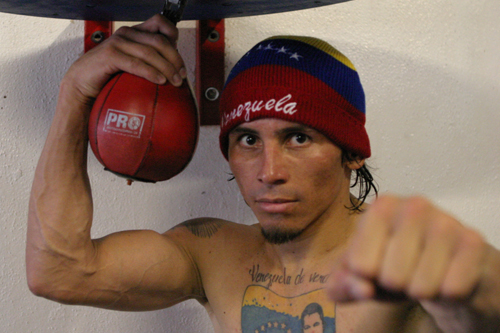

Едвін Валеро – народ. 3 грудня 1981 Болеро-Альто, Меріда,. Непереможений венесуельський боксер-професіонал, який виступав в першій легкій ваговій категорії. Чемпіон Центральної і Південної Америки. Був чемпіоном світу за версією WBA. Всі свої 27 перемог на професійному рингу здобув нокаутом, причому перші 18 з них закінчив в першому раунді, встановивши, таким чином, світовий рекорд. У 2001 році в результаті аварії на мотоциклі боксер отримав перелом черепа, і, як підсумок - трепанацію, видалення пухлини головного мозку. З такою травмою в такому жорстокому виді спорту, як професійний бокс, виступати неможливо, але впертий венесуельський боксер вирішив інакше.